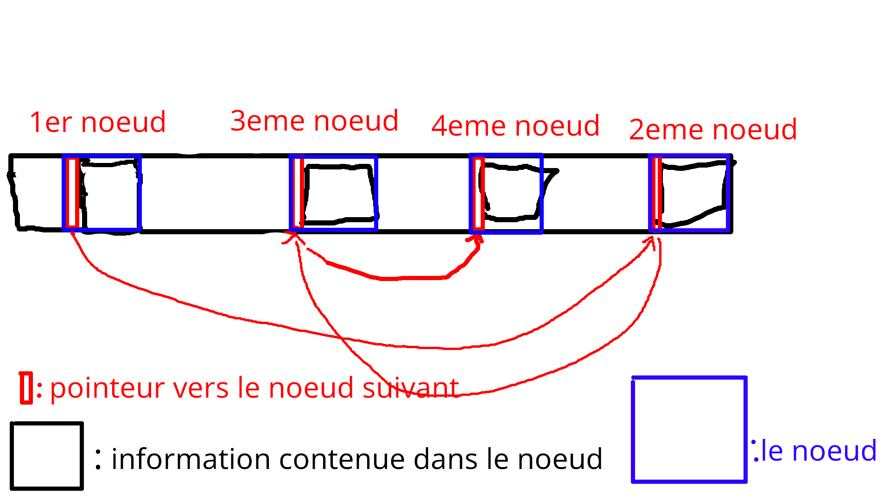
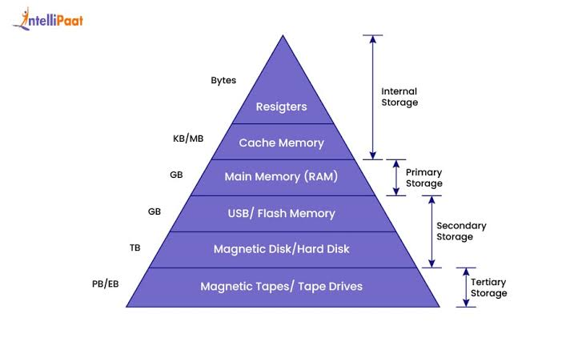
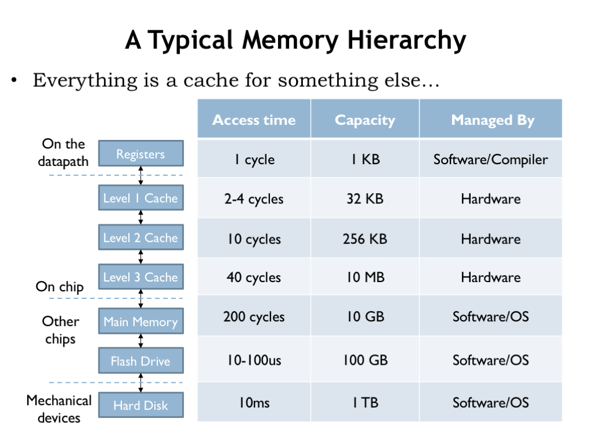

Les structures permettent de regrouper des information ensemble, elles stoqués souvent de façon contigue (ou presque).
Pour déclarer une structure maison on utilise la syntaxe
suivante:
struct maison {
int prix;
int age;
float hauteur;
char nom[20];
};Dans celle-ci se trouvent les champs prix, age, hauteur et nom.
Pour initialiser une structure on utilise la syntaxe suivante:
struct maison ma_maison = {.prix = 200000, .age = 10, .hauteur = 42.1};Exemple de programme sur les structures
#include <stdio.h>
struct maison {
int prix;
int age;
float hauteur;
char nom[20];
};
void imprimer_valeurs_maison(struct maison m) {
printf("ma maison a %d ans\n", m.age);
printf("ma maison coûte %d euros\n", m.prix);
printf("ma maison a %f m d'hauteur\n", m.hauteur);
}
int main(void) {
struct maison ma_maison = {.prix = 200000, .age = 10, .hauteur = 42.1};
imprimer_valeurs_maison(ma_maison);
}Une liste chainée est une succession de noeuds (node en anglais). Ils sont liés entre eux par un pointeur qui pointe vers le noeud suivant.

Des programmes rapides auront souvent tendance à préférer les stockages d'information de façon contigue (proche dans l'espace), celà augmentera la possibilité d'un "cache hit". C'est à dire que des éléments utilisés prochainement dans un programme soient déjà présents dans la mémoire cache (SRAM), évitant ainsi la nécesité d'aller les chercher dans mémoire principale plus lente (DRAM)

